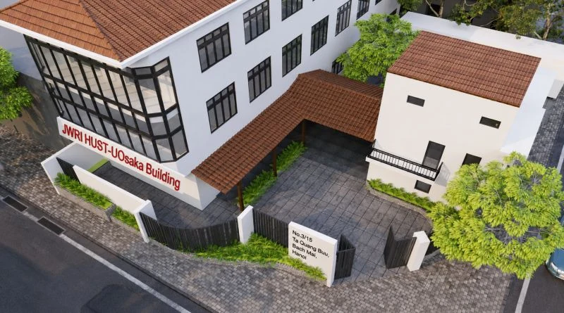

Bài viết gốc bằng tiếng Việt

BÀI GIỚI THIỆU VÀ THỐNG KÊ CÔNG BỐ KHOA HỌC
TRUNG TÂM NGHIÊN CỨU CÔNG NGHỆ HÀN VÀ GHÉP NỐI (JWRI HUST-UOsaka)
I. GIỚI THIỆU CHUNG VỀ NĂNG LỰC NGHIÊN CỨU KHOA HỌC
Trung tâm Nghiên cứu Công nghệ Hàn và Ghép nối (JWRI HUST-UOsaka) là đơn vị nghiên cứu liên ngành cấp 3 trực thuộc Trường Cơ khí – Đại học Bách khoa Hà Nội, được thành lập theo Quyết định số 195/QĐ-BKHN ngày 09/01/2023 trên cơ sở hợp tác chiến lược giữa Đại học Bách khoa Hà Nội và Viện Nghiên cứu Hàn & Ghép nối (JWRI) thuộc Đại học Osaka, Nhật Bản.
Kế thừa bề dày truyền thống gần 70 năm đào tạo và nghiên cứu ngành Hàn tại Bách khoa Hà Nội, Trung tâm quy tụ đội ngũ cán bộ khoa học nòng cốt gồm các Giáo sư, Phó Giáo sư và Tiến sĩ được đào tạo bài bản trực tiếp tại Nhật Bản (Viện JWRI – Đại học Osaka) và các quốc gia phát triển trở về. Với bệ phóng từ hệ thống phòng thí nghiệm hiện đại trị giá 550 triệu Yên tài trợ bởi nguồn vốn ODA viện trợ không hoàn lại của Chính phủ Nhật Bản (JICA) cùng tổ hợp công trình 3 tầng tại địa chỉ Số 3, ngõ 15 Phố Tạ Quang Bửu, Phường Bách Khoa, Hà Nội, Trung tâm đã bứt phá mạnh mẽ, trở thành một trong những điểm sáng về công bố quốc tế chất lượng cao của Đại học Bách khoa Hà Nội.
Nguồn lực nghiên cứu của Trung tâm tập trung vào 5 nhóm công nghệ mũi nhọn:
- Vật lý hồ quang và kỹ thuật dịch chuyển kim loại: Tối ưu hóa quá trình hàn MIG/MAG, FCAW, MCAW dưới tác động của trường từ bên ngoài và khí bảo vệ (CO_2/Ar).
- Công nghệ hàn Laser và Laser-Arc Hybrid: Khai thác nguồn Fiber Laser 6kW, hàn điểm Plasma hồ quang và mô phỏng đặc tính hồ quang trong chế tạo bồi đắp kim loại (WAAM).
- Công nghệ hàn ma sát khuấy (FSW): Hàn nối các hợp kim nhôm tiên tiến (AA6061-T6) cho ngành chế tạo xe điện, hàng không vũ trụ và đóng tàu.
- Vật liệu vảy hàn nhiệt độ thấp & Bao gói điện tử: Nghiên cứu vật liệu vảy hàn không chì thế hệ mới (Sn-In-Cu, Sn-3.5Ag) đáp ứng công nghiệp bán dẫn và vi điện tử 3D.
- Ứng dụng Trí tuệ nhân tạo (AI/Machine Learning) & Mô phỏng số: Ứng dụng mô hình CALPHAD, Gaussian Process Regression (GPR) và thuật toán SHAP trong thiết kế vật liệu và dự đoán tổ chức vi cấu trúc mối hàn.
II. THỐNG KÊ TỔNG HỢP KẾT QUẢ CÔNG BỐ KHOA HỌC (GIAI ĐOẠN 2023 – 2026)
Trong giai đoạn từ năm 2023 đến năm 2026, đội ngũ các nhà khoa học của Trung tâm JWRI HUST-UOsaka đã công bố tổng cộng 45 công trình khoa học trên các tạp chí và hội nghị uy tín trong nước và quốc tế.
1. Bảng tổng hợp công bố khoa học theo năm
| Năm công bố | Số bài WoS/ISI (SCIE) | Số bài Scopus / HNQT | Tạp chí chuyên ngành / HN trong nước | Tổng số công trình |
|---|---|---|---|---|
| 2023 | 3 bài (1 Q1, 2 Q2) | 1 bài | 3 bài | 7 bài |
| 2024 | 6 bài (4 Q1, 2 Q2) | 2 bài | 2 bài | 10 bài |
| 2025 | 7 bài (4 Q1, 1 Q2, 1 Q3, 1 Q4) | 2 bài | 5 bài | 14 bài |
| 2026 | 6 bài SCIE (2 Q1, 3 Q2, 1 Q3) | 3 bài | 5 bài | 14 bài |
| TỔNG CỘNG | 22 bài ISI/SCIE | 8 bài | 15 bài | 45 BÀI BÁO |
2. Phân loại chất lượng các bài báo thuộc hệ thống WoS/SCIE (22 bài)
- Nhóm Q1 (Quartile 1 - Tạp chí top 25% hàng đầu thế giới): 11 bài (Chiếm 50% tổng số bài SCIE).
- Nhóm Q2 (Quartile 2): 8 bài.
- Nhóm Q3 (Quartile 3): 2 bài.
- Nhóm Q4 (Quartile 4): 1 bài.
III. DANH SÁCH CÁC CÔNG BỐ KHOA HỌC TIÊU BIỂU CỦA TRUNG TÂM
Dưới đây là danh mục các bài báo quốc tế thuộc danh mục WoS/SCIE (Q1, Q2) tiêu biểu do các cán bộ nòng cốt của Trung tâm đứng tên chính/đồng tác giả:
1. Tạp chí Quốc tế thuộc Nhóm Q1 (SCIE / WoS Q1)
- Han Le Duy (2025). "In-situ" x-ray imaging technology for material and manufacturing science: A review. Journal of Materials Processing Technology (WoS - Q1). DOI: 10.1016/j.jmapro.2025.03.049.
- Bui Van Hanh, Trinh Quang Ngoc, Han Le Duy, Phan Huy Le (2025). Effect of external magnetic field on arc characteristics and weld bead formation in metal-cored arc welding. The International Journal of Advanced Manufacturing Technology (WoS - Q1). DOI: 10.1007/s00170-025-16581-w.
- Bui Van Hanh, Han Le Duy, Trinh Quang Ngoc (2025). Properties of In-Sn-xCu alloys and their joints on a Cu substrate before and after isothermal aging. Materials Science and Engineering: A (WoS - Q1). DOI: 10.1016/j.msea.2025.147796.
- Bui Van Hanh, Trinh Quang Ngoc, Han Le Duy, Phan Huy Le (2026). Effect of welding parameters on void defect formation in friction stir welding of 6061 aluminum alloys. The International Journal of Advanced Manufacturing Technology (SCIE - Q1). DOI: 10.1007/s00170-026-17807-1.
- Trinh Quang Ngoc, Bui Van Hanh (2026). Effect of flux composition on metal transfer characteristics in rutile-type flux-cored arc welding. The International Journal of Advanced Manufacturing Technology (SCIE - Q1). DOI: 10.1007/s00170-026-17867-3.
- Trinh Quang Ngoc, Bui Van Hanh (2026). Flux column effects on metal transfer mechanism in a rutile-type FCAW: insights from comparisons with MCAW and GMAW. Welding in the World (SCIE - Q1). DOI: 10.1007/s40194-026-02482-3.
2. Tạp chí Quốc tế thuộc Nhóm Q2 (SCIE / WoS Q2)
- Han Le Duy (2023). The electromigration study of thin-film structured Sn3.5Ag and Ag using continuous observation and reliability enhancement approach. Thin Solid Films (WoS - Q2). DOI: 10.1016/j.tsf.2023.139827.
- Trinh Quang Ngoc (2023). Numerical investigation of the arc properties in gas tungsten arc–based additive manufacturing. Welding in the World (WoS - Q2). DOI: 10.1007/s40194-023-01473-y.
- Bui Van Hanh, Trinh Quang Ngoc (2023). Individual Effects of Alkali Element and Wire Structure on Metal Transfer Process in Argon Metal-Cored Arc Welding. Materials (WoS - Q2). DOI: 10.3390/ma16083053.
- Bui Van Hanh, Trinh Quang Ngoc (2025). Effects of Longitudinal External Magnetic Field on Metal Transfer Behavior and Spatter Formation in CO2 Arc Welding. Materials (WoS - Q2). DOI: 10.3390/ma18030537.
- Nguyen Tien Duong, Nguyen Van Anh (2026). Development of Butt Fusion Welding Equipment and Technology for Welding Dissimilar Plastic Pipes. Journal of Measurements in Engineering (ISI - Q2). DOI: 10.1515/jmbm-2025-0116.
- Bui Van Hanh, Trinh Quang Ngoc (2026). Elucidation of metal transfer behavior of metal-cored arc welding under the pulsed welding current. Acta Mechanica (SCIE - Q2). DOI: 10.1007/s00161-026-01463-7.
3. Các nghiên cứu ứng dụng Mô phỏng số và Học máy (AI/ML)
- Han Le Duy (2026). Phase-Informed Machine Learning for In-Sn-Cu Low-Temperature Solder Alloys: CALPHAD Augmentation, Gaussian Process Regression With Physics, and SHAP-Derived Design Rules. Scopus Index.
- Trinh Quang Ngoc, Han Le Duy (2026). Microstructural evolution and interfacial characterization of WAAM-CMT Inconel 718 on SS400 steel. Scopus Index.
💡 Đánh giá tổng quan: Sự gia tăng nhanh chóng cả về số lượng bài báo (từ 7 bài năm 2023 lên 14 bài năm 2026) lẫn chất lượng (tỷ lệ bài WoS Q1/Q2 chiếm đại đa số) khẳng định chiến lược đầu tư đúng đắn vào hạ tầng ODA JICA, mô hình hợp tác Viện – Trường với Đại học Osaka và tinh thần nghiên cứu nghiêm túc của đội ngũ cán bộ Trung tâm. Trung tâm JWRI HUST-UOsaka tiếp tục phấn đấu hướng tới mục tiêu duy trì trung bình 0,8 – 1,0 bài báo ISI/SCIE trên mỗi cán bộ/năm, đóng góp thiết thực vào việc nâng cao thứ hạng quốc tế của Đại học Bách khoa Hà Nội.